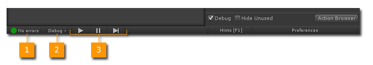
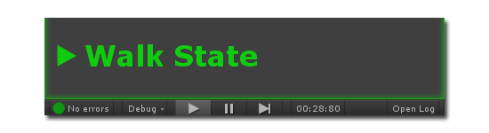
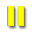
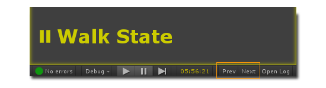

The Debug Toolbar can be found in the Playmaker Editor.

- Error Count: Shows errors in the project. Click to open the Error Checker Window.
- Debug Menu: Click to open the Debug Menu.
- Play Controls: See below.
Play Controls
The play controls work the same as the Unity play controls, with the exception of the Step button.
The Step button behavior is set in the Debug Menu (Single Frame, Step To State Change...).
Play State
When the game is playing, an icon shows the current state of the FSM:

There are 4 play states:
Playing Paused Breakpoint Error
Clicking the Breakpoint or Error icon jumps to the relevant State.
Debug Flow
If Debug Flow is enabled in Preferences, pausing playback will show 2 extra buttons:

- Prev: Rewind time to the previous state.
- Next: Advance time to the next state.
NOTE: Debug Flow time is synchronized across the editor, so you can select other FSMs, or check the FSM Log and see what was happening at that time.
See Also: